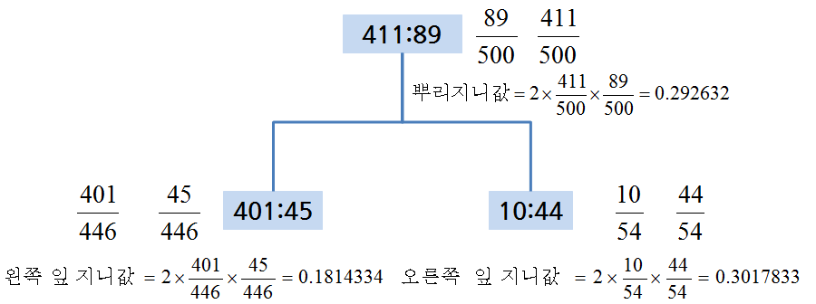
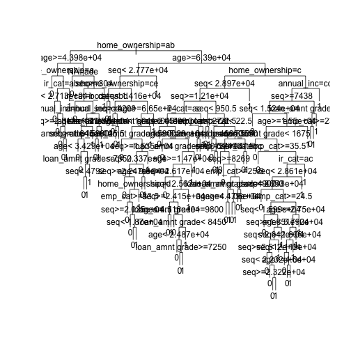
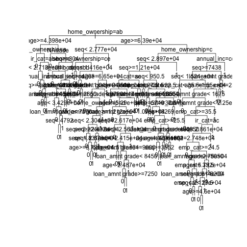
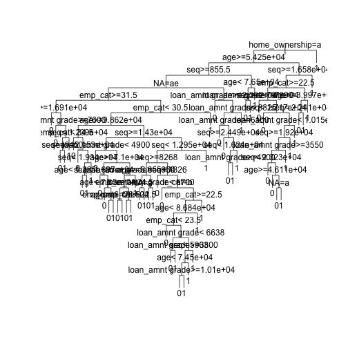
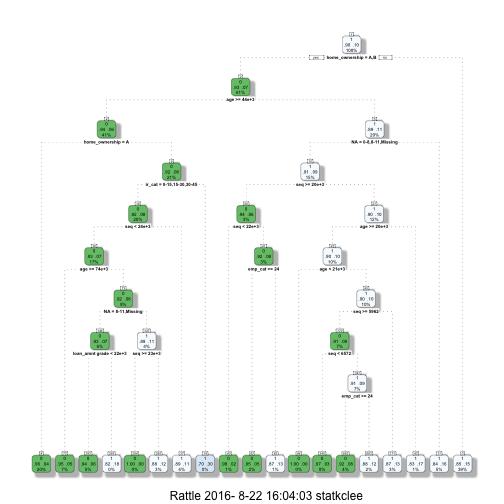
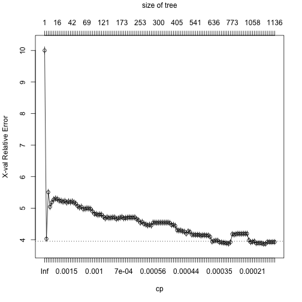
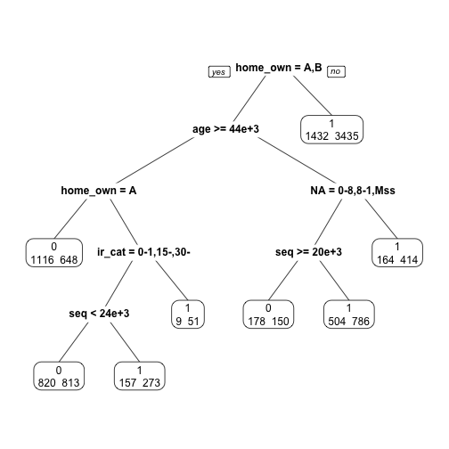

xwMOOC 기계학습
신용평점모형 - 로지스틱 회귀모형과 의사결정나무
학습목표
- 신용평점모형을 위해 사용되는 로지스틱 회귀모형과 의사결정나무를 이해한다.
- 렌딩클럽 대출 데이터에 로지스틱 회귀모형을 적합시키고 계수 및 모형성능에 대해 살펴본다.
1. 로지스틱 회귀 1 2
앞선 탐색적 데이터 분석과정과 피쳐 공학 등을 통해 모형적합을 시킬 준비는 사전에 맞춰졌다고 가정한다. 따라서, 종속변수 채무 불이행에 대한 정의가 완료되었고, 기계학습 모형론을 적합시킬 준비 즉, 훈련데이터와 테스트 데이터 구분도 마무리했다. 이제 로지스틱 회귀분석을 실행하여 모형적합결과를 해석하는 과정을 거쳐본다.
##=====================================================================
## 01. 렌딩클럽 데이터 가져오기
##=====================================================================
suppressMessages(library(readr))
suppressMessages(library(dplyr))
setwd("~")
loan.dat <- read_csv("lending-club-loan-data/loan.csv", col_names = TRUE)Parsed with column specification:
cols(
.default = col_character(),
id = col_integer(),
member_id = col_integer(),
loan_amnt = col_double(),
funded_amnt = col_double(),
funded_amnt_inv = col_double(),
int_rate = col_double(),
installment = col_double(),
annual_inc = col_double(),
dti = col_double(),
delinq_2yrs = col_double(),
inq_last_6mths = col_double(),
mths_since_last_delinq = col_double(),
mths_since_last_record = col_double(),
open_acc = col_double(),
pub_rec = col_double(),
revol_bal = col_double(),
revol_util = col_double(),
total_acc = col_double(),
out_prncp = col_double(),
out_prncp_inv = col_double()
# ... with 11 more columns
)
See spec(...) for full column specifications.
##=====================================================================
## 02. 렌딩클럽 데이터 변환
##=====================================================================
library(gmodels)
# 종속변수 설정
bad_indicators <- c("Charged Off",
"Default",
"Does not meet the credit policy. Status:Charged Off",
"In Grace Period",
"Default Receiver",
"Late (16-30 days)",
"Late (31-120 days)")
loan.dat$loan_status_yn <- ifelse(loan.dat$loan_status %in% bad_indicators, 1, 0)
##=====================================================================
## 03. 렌딩클럽 데이터 기계학습
##=====================================================================
# 0. 훈련과 테스트 데이터셋 분리
index_train <- sample(1:nrow(loan.dat), 2/3*nrow(loan.dat))
training_set <- loan.dat[index_train, ]
test_set <- loan.dat[-index_train,]
#---------------------------------------------------------------------
# 01. 이항 로지스틱 회귀 모형
#---------------------------------------------------------------------
logit_mod <- glm(loan_status_yn ~ int_rate, family="binomial", data=training_set)
summary(logit_mod)
Call:
glm(formula = loan_status_yn ~ int_rate, family = "binomial",
data = training_set)
Deviance Residuals:
Min 1Q Median 3Q Max
-1.0001 -0.4305 -0.3454 -0.2669 2.7623
Coefficients:
Estimate Std. Error z value Pr(>|z|)
(Intercept) -4.548111 0.017655 -257.6 <2e-16 ***
int_rate 0.141963 0.001086 130.7 <2e-16 ***
---
Signif. codes: 0 '***' 0.001 '**' 0.01 '*' 0.05 '.' 0.1 ' ' 1
(Dispersion parameter for binomial family taken to be 1)
Null deviance: 317760 on 591585 degrees of freedom
Residual deviance: 300522 on 591584 degrees of freedom
AIC: 300526
Number of Fisher Scoring iterations: 5
이항 로지스틱 회귀분석은 종속변수가 0과 1, 즉 정상(0) 혹은 채무불이행(1)이 되고 이를 다수의 설명변수 혹은 예측변수로 적합시키는 모형이다.
\[P(\text{loan_status_yn} = 1 | x_1 , x_2 , \cdots , x_m ) = \frac{1}{1+e^{-(\beta_0 + \beta_1 x_1 + \cdots + \beta_m x_m)}}\]
회귀분석의 결과는 확률값로 표현되고, \(x_1 , x_2 , \cdots , x_m\)은 설명변수, 즉 데이터가 되고, \(\beta_0 , \beta_1 , \cdots , \beta_m\)은 추정해야 되는 회귀 계수가 되고 이를 결합한 \(\beta_0 + \beta_1 x_1 + \cdots + \beta_m x_m\)은 선형 예측변수가 된다.
1.1. 로지스틱 회귀 적합과 예측
로지스틱 회귀분석에 데이터를 넣어 적합시킬 경우 glm 함수를 사용하고 family=binomial을 인자로 넣고 종속변수와 설명변수는 R 모형식에 맞춰 집어넣는다. 그리고 결과를 logit_mod 모형에 저장하면 로지스틱 회귀모형에 대한 모든 정보가 담기게 된다.
summary(logit_mod) 명령어로 이자율로 채무 불이행을 예측한 모형을 살펴본다. \(\beta_0\) (Intercept) 절편은 -4.498306, \(\beta_1\) int_rate 이자율은 0.139891 으로 추정되고 이를 수식으로 표현하면 다음과 같다.
\[P(\text{loan_status_yn} = 1 | \text{이자율(int_rate)} ) = \frac{1}{1+e^{-(-4.498306+0.139891 \times \text{이자율(int_rate)} )}}\]
로지스틱 모형이 완성되어 이자율에 따른 채무 불이행 확률을 계산해본다.
check.obs <- as.data.frame(training_set[1,]) # 이자율 19.99
predict(logit_mod, check.obs) 1
-3.426602
predict(logit_mod, check.obs, type="response") 1
0.03147436
summary(logit_mod)
Call:
glm(formula = loan_status_yn ~ int_rate, family = "binomial",
data = training_set)
Deviance Residuals:
Min 1Q Median 3Q Max
-1.0001 -0.4305 -0.3454 -0.2669 2.7623
Coefficients:
Estimate Std. Error z value Pr(>|z|)
(Intercept) -4.548111 0.017655 -257.6 <2e-16 ***
int_rate 0.141963 0.001086 130.7 <2e-16 ***
---
Signif. codes: 0 '***' 0.001 '**' 0.01 '*' 0.05 '.' 0.1 ' ' 1
(Dispersion parameter for binomial family taken to be 1)
Null deviance: 317760 on 591585 degrees of freedom
Residual deviance: 300522 on 591584 degrees of freedom
AIC: 300526
Number of Fisher Scoring iterations: 5
1/(1+exp(-(-4.498306+0.139891*19.99)))[1] 0.1542192
이자율을 설명변수로 넣어 채무불이행을 예측하는데 predict 함수를 사용한다. 먼저 예측에 사용될 데이터를 준비한다. check.obs로 training_set에서 첫번째 관측점을 뽑아낸다. 그리고 나서 predict(logit_mod, check.obs) 명령어를 실행시키면 -1.701879 값이 나온다. 이는 선형 예측변수 값과 일치(소수점 아래 4자리 까지)한다.
$_0 + _1 \text{이자율(int_rate) = -4.498306+0.139891*19.99 = -1.701885 $
원하는 확률을 계산하기 위해서는 predict(logit_mod, check.obs, type="response") 처럼 type="response" 인자를 전달하면 확률값이 계산된다.
R로 계산된 이자율 19.99에 대한 채무 불이행 확률은 0.15422으로 확인된다. 수식으로 확인하면 거의 동일한 결과를 얻게 된다.
\[P(\text{loan_status_yn} = 1 | \text{이자율(int_rate)} ) = \frac{1}{1+e^{-(-4.498306+0.139891 \times \text{이자율(int_rate)} )}} = \frac{1}{1+e^{-(-4.498306+0.139891 \times 19.99 )}} = 0.1542192\]
1.2. \(\beta\) 회귀계수 해석
통계모형이 다른 기계학습 모형 혹은 알고리즘과 비교해서 많이 사랑받는 이유 중의 하나가 설명이 가능하다는 점이다. 즉, \(\beta\)가 갖는 의미를 이해하고 이를 기반으로 설명이 가능하다.
\[P(\text{loan_status_yn} = 1 | x_1 , x_2 , \cdots , x_m ) = \frac{1}{1+e^{-(\beta_0 + \beta_1 x_1 + \cdots + \beta_m x_m)}} = \frac{e^{\beta_0 + \beta_1 x_1 + \cdots + \beta_m x_m}}{1+e^{\beta_0 + \beta_1 x_1 + \cdots + \beta_m x_m}}\]
\[P(\text{loan_status_yn} = 0 | x_1 , x_2 , \cdots , x_m ) = 1- \frac{1}{1+e^{-(\beta_0 + \beta_1 x_1 + \cdots + \beta_m x_m)}} = \frac{1}{1+e^{\beta_0 + \beta_1 x_1 + \cdots + \beta_m x_m}}\]
loan_status_yn 이 0에 대한 1의 비율을 오즈비(Odds Ratio)라고 정의하고, 채무불이행이 없는 것과 비교하여 채무불이행이 얼마나 높은지 혹은 낮은지를 정량화한다.
\[\frac {P(\text{loan_status_yn} = 1 | x_1 , x_2 , \cdots , x_m )} {P(\text{loan_status_yn} = 0 | x_1 , x_2 , \cdots , x_m )} = e^{\beta_0 + \beta_1 x_1 + \cdots + \beta_m x_m}\]
- 만약 \(x_i\) 가 1 단위 증가하게 되면, \(e^{\beta_i}\)을 오즈값에 곱하게 된다.
- \(\beta_i < 0\) 작게 되면, \(e^{\beta_i}<1\) 이 되어, 오즈값은 \(x_i\) 가 증가하면 오즈값은 감소한다.
- \(\beta_i > 0\) 크게 되면, \(e^{\beta_i}>1\) 이 되어, 오즈값은 \(x_i\) 가 증가하면 오즈값은 증가한다.
- 이자율 모형에 적용하면, 다음과 같은 결과가 도출된다.
- 이자율이 1만큼 증가하게 되면 (1% 증가하게 되면), 회귀계수
0.139891을 곱해야 되고 양수이기 때문에 채무불이행은 확률은 높아진다. - 오즈에 \(e^{0.139891}\) 을 곱하게 되면,
1.150148값이 도출되고, 동일한 조건에 정상인과 비교하여 약 15% 높게 채무 불이행 확률이 예측된다.
- 이자율이 1만큼 증가하게 되면 (1% 증가하게 되면), 회귀계수
1.3. 로지스틱 회귀 모형 성능평가
로지스틱 회귀모형에 대한 성능을 평가하기 위해서 채무불이행은 채무불이행으로, 정상고객은 정상고객으로 예측하는가를 갖고 성능을 평가한다. 이를 위해서 예측된 확률값(0에서 1사이)을 정상(0)과 채무불이행(1)으로 구분하는 것이 필요하다. 이를 위해서 도입되는 것이 컷오프(cutoff) 혹은 임계값(threshold value)을 설정하게 된다. 0.5를 임계값으로 설정하여 채무불이행 확률값이 이보다 작으면 채무불이행 위험 없음 0으로 0.5 보다 크면 1 채무불이행으로 각기 설정한다.
하지만, 채무불이행은 흔하지 않은 사건으로 0.5 보다 훨씬 적은 값을 설정하여 채무불이행 여부를 판단하고 이를 기준으로 오차행렬(Confusion Matrix) 을 생성하여 성능을 평가하는 것이 일반적이다.
logit_mod_two_var <- glm(loan_status_yn ~ revol_util + int_rate, family="binomial", data=training_set)
pred_two_var <- predict(logit_mod_two_var, newdata = test_set, type = "response")
pred_cutoff_15 <- ifelse(pred_two_var > 0.15, 1, 0)
table(test_set$loan_status_yn, pred_cutoff_15) pred_cutoff_15
0 1
0 255146 17958
1 18430 4085
data.frame(training_set[1:10, c("loan_status_yn", "revol_util", "int_rate")],
pred_two_var[1:10], pred_cutoff_15[1:10]) loan_status_yn revol_util int_rate pred_two_var.1.10.
1 0 45.6 7.90 0.07341028
2 1 58.5 21.00 0.06147135
3 0 58.5 7.89 0.04597804
4 0 49.8 18.55 0.02294905
5 0 41.6 14.72 0.04450622
6 0 43.6 10.99 0.07435555
7 0 33.3 11.99 0.10266189
8 0 32.1 19.99 0.09329706
9 1 69.3 20.99 0.04611335
10 0 56.8 10.99 0.10944559
pred_cutoff_15.1.10.
1 0
2 0
3 0
4 0
5 0
6 0
7 0
8 0
9 0
10 0
loan_status_yn 채무불이행 종속변수와 revol_util, int_rate 설명변수가 함께 나와 있다. 두 설명변수를 통해 예측한 채무불이행 확률과 컷오프로 15%를 적용한 결과 채무불이행 모형예측 결과가 0과 1로 나타나 있고 실제 채무불이행 데이터와 비교도 가능하다.
cutoff <- 0.15
pred_cutoff_logit <- ifelse(pred_two_var > cutoff, 1, 0)
tab_class_logit <- table(test_set$loan_status_yn, pred_cutoff_15)
sum(diag(tab_class_logit))/nrow(test_set)[1] 0.8763933
2. 의사결정나무(Decision Tree)
R에서 의사결정나무 모형을 적합시키는데 rpart를 사용하고 분기를 하는데 기본 기준으로 지니(Gini)를 사용한다. 가장 지니 이득(Gini Gain)을 최대화하는 방식으로 나무모형을 적합시켜 나간다.
기본 개념은 다음과 같고, 지니 이득은 다음과 계산된다.

지니 이득 = 뿌리 지니값 - 좌측 잎 비율 * 좌측 지니값 - 우측 잎 비율 * 우측 지니값
= 0.292632 – 446/500 * 0.1814334 – 54/500 * 0.3017833
= 0.09820084 ##=====================================================================
## 01. 렌딩클럽 데이터 가져오기
##=====================================================================
# http://rstudio-pubs-static.s3.amazonaws.com/3588_81e2ebd4de1b41bc9ac2f29f5f7dab2e.html
suppressMessages(library(readr))
suppressMessages(library(dplyr))
loan.dat <- read_fwf("data/lendingclub_loan_sample.txt", fwf_widths(c(6,11,10,6,15,11,4,8,8)), skip=1)Parsed with column specification:
cols(
X1 = col_integer(),
X2 = col_integer(),
X3 = col_integer(),
X4 = col_character(),
X5 = col_character(),
X6 = col_double(),
X7 = col_integer(),
X8 = col_character(),
X9 = col_character()
)
names(loan.dat) <- c("seq","loan_status", "loan_amnt grade", "home_ownership", "annual_inc", "age", "emp_cat", "ir_cat")
##=====================================================================
## 02. 의사결정나무
##=====================================================================
suppressMessages(library(rpart))
# 02-01. cp값 0.001 설정
loan_dt <- rpart(loan_status ~ ., method = "class", data = loan.dat,
control = rpart.control(cp = 0.001))
plot(loan_dt, uniform = TRUE)
text(loan_dt)
# 02-02.사전 확률 설정
loan_prior_dt <- rpart(loan_status ~ ., method = "class", data = loan.dat,
control = rpart.control(cp = 0.001),
parms = list(prior=c(0.7, 0.3)))
plot(loan_prior_dt, uniform = TRUE)
text(loan_prior_dt)
# 02-03.손실함수 설정
loan_loss_dt <- rpart(loan_status ~ ., method = "class", data = loan.dat,
control = rpart.control(cp = 0.001),
parms = list(loss = matrix(c(0, 10, 1, 0), ncol=2)))
plot(loan_loss_dt, uniform = TRUE)
text(loan_loss_dt)
# 02-04. CP, 사전확률, 손실함수 모두 설정
loan_prior_loss_dt <- rpart(loan_status ~ ., method = "class", data = loan.dat,
control = rpart.control(cp = 0.001),
parms = list(prior=c(0.7, 0.3),
loss = matrix(c(0, 10, 1, 0), ncol=2)))
plot(loan_prior_loss_dt, uniform = TRUE)
text(loan_prior_loss_dt)
rpart 모형을 적합시킬 때, CP, 사전확률, 손실함수 등 다양한 모수를 사전에 설정해야 한다. 특히, 채무불이행, 사기탐지 등 정상사례와 비교하여 예측하고자 하는 사례가 극도로 균형이 맞지 않는 경우에는 이런 세세한 부분에 신경을 많이 써서 모형을 적합시켜야 된다.
#---------------------------------------------------------------------
# 02-1. 의사결정나무: 가지치기(Prune)
#---------------------------------------------------------------------
# 01. 가지치기 사례
plotcp(loan_dt)
printcp(loan_dt)
Classification tree:
rpart(formula = loan_status ~ ., data = loan.dat, method = "class",
control = rpart.control(cp = 0.001))
Variables actually used in tree construction:
[1] age annual_inc emp_cat home_ownership
[5] ir_cat loan_amnt grade NA seq
Root node error: 2190/6570 = 0.33333
n= 6570
CP nsplit rel error xerror xstd
1 0.0059361 0 1.00000 1.00000 0.017447
2 0.0035388 6 0.95571 0.96621 0.017294
3 0.0022831 11 0.93653 0.97078 0.017316
4 0.0020548 17 0.92283 0.98174 0.017366
5 0.0019787 27 0.90183 0.98311 0.017372
6 0.0018265 30 0.89589 0.98356 0.017374
7 0.0015982 32 0.89224 0.99726 0.017435
8 0.0015221 34 0.88904 1.00274 0.017459
9 0.0013699 41 0.87717 1.00959 0.017489
10 0.0012177 65 0.84064 1.00868 0.017485
11 0.0011416 75 0.82603 1.02603 0.017558
12 0.0010654 89 0.80365 1.02694 0.017561
13 0.0010000 92 0.80046 1.02557 0.017556
index <- which.min(loan_dt$cptable[ , "xerror"])
tree_min <- loan_dt$cptable[index, "CP"]
ptree_prior <- prune(loan_dt, cp = tree_min)
library(rpart.plot)
prp(ptree_prior, extra=1)
# 02. 손실함수 가지치기 사례
suppressMessages(library(rattle))
suppressMessages(library(rpart.plot))
suppressMessages(library(RColorBrewer))
loan_loss_dt <- rpart(loan_status ~ ., method = "class", data = loan.dat,
control = rpart.control(cp = 0.001),
parms = list(prior=c(0.90, 0.10),
loss = matrix(c(0, 10, 1, 0), ncol=2)))
printcp(loan_loss_dt) # 0.0020928
Classification tree:
rpart(formula = loan_status ~ ., data = loan.dat, method = "class",
parms = list(prior = c(0.9, 0.1), loss = matrix(c(0, 10,
1, 0), ncol = 2)), control = rpart.control(cp = 0.001))
Variables actually used in tree construction:
[1] age annual_inc emp_cat home_ownership
[5] ir_cat loan_amnt grade NA seq
Root node error: 5913/6570 = 0.9
n= 6570
CP nsplit rel error xerror xstd
1 0.1428716 0 1.00000 10.0000 0.087237
2 0.0351598 1 0.85713 3.6637 0.078810
3 0.0076357 2 0.82197 5.0784 0.087155
4 0.0056317 4 0.80670 5.0013 0.086817
5 0.0040081 7 0.78980 5.0613 0.087097
6 0.0031963 9 0.78179 4.9591 0.086644
7 0.0025114 10 0.77859 5.0884 0.087215
8 0.0022324 15 0.76390 5.1135 0.087321
9 0.0021436 16 0.76167 5.2063 0.087708
10 0.0018180 18 0.75738 5.2157 0.087742
11 0.0016235 21 0.75193 5.1752 0.087572
12 0.0016235 22 0.75030 5.1619 0.087514
13 0.0014764 23 0.74868 5.0374 0.086979
14 0.0014460 32 0.73387 5.0733 0.087140
15 0.0014375 35 0.72953 5.0355 0.086966
16 0.0014278 38 0.72522 5.0355 0.086966
17 0.0014079 46 0.71314 5.0378 0.086975
18 0.0013572 48 0.71032 5.0064 0.086832
19 0.0013191 51 0.70594 4.9841 0.086727
20 0.0012938 54 0.70198 4.9796 0.086707
21 0.0012684 55 0.70068 4.9637 0.086635
22 0.0012684 56 0.69942 4.9637 0.086634
23 0.0012430 58 0.69688 4.9637 0.086634
24 0.0012303 63 0.69036 4.9798 0.086705
25 0.0012303 65 0.68790 4.9798 0.086705
26 0.0011923 67 0.68544 4.9685 0.086653
27 0.0011796 68 0.68425 4.9461 0.086548
28 0.0011796 70 0.68189 4.9053 0.086358
29 0.0011162 78 0.66908 4.9370 0.086506
30 0.0010401 79 0.66796 4.9418 0.086525
31 0.0010232 80 0.66692 4.9878 0.086725
32 0.0010147 83 0.66385 4.9561 0.086581
33 0.0010000 86 0.66060 4.9361 0.086484
ptree_loss_dt <- prune(loan_loss_dt, cp = 0.0020928)
fancyRpartPlot(ptree_loss_dt)
# 03. 자주 사용되는 추가 선택옵션
case_weights <- ifelse(loan.dat$loan_status==1, 3, 1)
loan_loss_wgt_dt <- rpart(loan_status ~ ., method = "class", data = loan.dat,
control = rpart.control(minsplit = 5, minbucket = 2, cp = 0.0001),
weights=case_weights,
parms = list(prior=c(0.90, 0.10),
loss = matrix(c(0, 10, 1, 0), ncol=2)))
plotcp(loan_loss_wgt_dt)
printcp(loan_loss_wgt_dt) # 0.00400812
Classification tree:
rpart(formula = loan_status ~ ., data = loan.dat, weights = case_weights,
method = "class", parms = list(prior = c(0.9, 0.1), loss = matrix(c(0,
10, 1, 0), ncol = 2)), control = rpart.control(minsplit = 5,
minbucket = 2, cp = 1e-04))
Variables actually used in tree construction:
[1] age annual_inc emp_cat home_ownership
[5] ir_cat loan_amnt grade NA seq
Root node error: 9855/6570 = 1.5
n= 6570
CP nsplit rel error xerror xstd
1 0.14287164 0 1.00000 10.0000 0.117041
2 0.03515982 1 0.85713 4.0271 0.087208
3 0.00763572 2 0.82197 5.5052 0.098653
4 0.00563166 4 0.80670 5.0429 0.095470
5 0.00400812 7 0.78980 5.1868 0.096507
6 0.00319635 9 0.78179 5.2773 0.097137
7 0.00251142 10 0.77859 5.3041 0.097326
8 0.00223237 15 0.76390 5.2865 0.097199
9 0.00214358 16 0.76167 5.2411 0.096887
10 0.00181803 18 0.75738 5.2303 0.096805
11 0.00162354 21 0.75193 5.2053 0.096632
12 0.00147641 23 0.74868 5.2230 0.096760
13 0.00144597 30 0.73754 5.1805 0.096457
14 0.00143751 36 0.72887 5.2122 0.096679
15 0.00140791 39 0.72456 5.1941 0.096552
16 0.00131913 41 0.72174 5.2100 0.096663
17 0.00129376 45 0.71646 5.1790 0.096437
18 0.00126839 46 0.71517 5.1430 0.096181
19 0.00123034 48 0.71263 5.0641 0.095613
20 0.00119229 50 0.71017 5.0234 0.095318
21 0.00117960 51 0.70898 5.0438 0.095465
22 0.00114155 62 0.69252 4.9761 0.094970
23 0.00112253 63 0.69137 4.9806 0.095003
24 0.00111618 68 0.68425 4.9965 0.095119
25 0.00109716 69 0.68313 4.9896 0.095070
26 0.00109082 77 0.67387 4.9760 0.094971
27 0.00102317 78 0.67278 4.8977 0.094380
28 0.00101471 95 0.65112 4.8231 0.093818
29 0.00101471 96 0.65010 4.8140 0.093750
30 0.00097666 101 0.64498 4.7890 0.093560
31 0.00095129 103 0.64302 4.8006 0.093645
32 0.00091324 111 0.63498 4.7917 0.093575
33 0.00089633 120 0.62633 4.7275 0.093065
34 0.00088787 126 0.62073 4.6777 0.092678
35 0.00085743 138 0.60723 4.7118 0.092941
36 0.00083714 145 0.60041 4.6899 0.092762
37 0.00083714 146 0.59957 4.6945 0.092797
38 0.00079909 147 0.59873 4.7062 0.092883
39 0.00076104 149 0.59713 4.7067 0.092881
40 0.00074835 151 0.59561 4.6600 0.092506
41 0.00074412 167 0.58105 4.6782 0.092647
42 0.00072298 170 0.57882 4.6988 0.092805
43 0.00071030 172 0.57737 4.7189 0.092965
44 0.00069762 190 0.56164 4.6811 0.092662
45 0.00069339 192 0.56025 4.6880 0.092715
46 0.00068493 197 0.55614 4.6971 0.092785
47 0.00067859 214 0.54427 4.7083 0.092874
48 0.00067225 234 0.52775 4.7015 0.092821
49 0.00067225 236 0.52641 4.7038 0.092839
50 0.00065956 240 0.52372 4.7082 0.092874
51 0.00063420 242 0.52240 4.6523 0.092429
52 0.00063420 249 0.51773 4.6190 0.092158
53 0.00061728 252 0.51583 4.5390 0.091501
54 0.00060883 257 0.51268 4.5639 0.091701
55 0.00060037 260 0.51086 4.5031 0.091207
56 0.00059192 264 0.50822 4.4829 0.091040
57 0.00058346 270 0.50467 4.4536 0.090799
58 0.00057078 273 0.50282 4.4742 0.090965
59 0.00055809 277 0.50053 4.4514 0.090780
60 0.00055809 279 0.49942 4.5421 0.091515
61 0.00055809 286 0.49551 4.5421 0.091515
62 0.00054541 290 0.49328 4.5376 0.091479
63 0.00053780 299 0.48772 4.5423 0.091515
64 0.00053272 334 0.46012 4.5423 0.091515
65 0.00053272 336 0.45906 4.5424 0.091514
66 0.00053272 338 0.45799 4.5424 0.091514
67 0.00052427 374 0.43343 4.5424 0.091514
68 0.00051581 377 0.43186 4.5446 0.091533
69 0.00050736 383 0.42877 4.5311 0.091423
70 0.00050736 389 0.42519 4.4702 0.090926
71 0.00050736 393 0.42311 4.4702 0.090926
72 0.00050736 397 0.42108 4.4408 0.090684
73 0.00050228 404 0.41748 4.3013 0.089509
74 0.00050101 409 0.41497 4.2923 0.089432
75 0.00049890 415 0.41182 4.2946 0.089451
76 0.00045662 419 0.40931 4.2660 0.089197
77 0.00044647 510 0.36314 4.2549 0.089099
78 0.00043125 517 0.35982 4.1922 0.088550
79 0.00043125 521 0.35751 4.2667 0.089194
80 0.00042280 531 0.35292 4.2444 0.088999
81 0.00041857 534 0.35165 4.1588 0.088252
82 0.00041857 537 0.35036 4.1588 0.088252
83 0.00040589 540 0.34883 4.1544 0.088212
84 0.00040589 544 0.34693 4.1544 0.088212
85 0.00040589 549 0.34490 4.1544 0.088212
86 0.00039320 555 0.34247 4.1319 0.088013
87 0.00039320 557 0.34168 4.1432 0.088112
88 0.00039320 577 0.33382 4.1432 0.088112
89 0.00038686 583 0.33146 4.1364 0.088053
90 0.00038334 587 0.32991 4.1364 0.088053
91 0.00038052 629 0.30436 4.0914 0.087652
92 0.00037206 632 0.30322 3.9389 0.086257
93 0.00036361 635 0.30211 3.9638 0.086485
94 0.00035877 641 0.29992 3.9731 0.086566
95 0.00035515 655 0.29381 3.9731 0.086566
96 0.00034247 663 0.29039 3.9216 0.086087
97 0.00033824 739 0.26332 3.9172 0.086045
98 0.00032344 742 0.26230 3.9060 0.085940
99 0.00031963 748 0.26022 3.8995 0.085876
100 0.00031710 753 0.25863 3.8881 0.085771
101 0.00031710 757 0.25736 3.8745 0.085645
102 0.00030441 761 0.25609 3.9198 0.086065
103 0.00030441 772 0.25238 4.1775 0.088378
104 0.00029173 787 0.24736 4.1618 0.088239
105 0.00028750 794 0.24485 4.1777 0.088377
106 0.00027905 800 0.24313 4.1914 0.088495
107 0.00027905 897 0.21606 4.1870 0.088455
108 0.00027397 901 0.21476 4.1870 0.088455
109 0.00026213 913 0.20928 4.1914 0.088495
110 0.00026213 926 0.20586 4.1914 0.088495
111 0.00026002 934 0.20373 4.1914 0.088495
112 0.00022831 938 0.20269 3.9816 0.086621
113 0.00021140 1053 0.16507 3.9206 0.086061
114 0.00020294 1057 0.16416 3.9343 0.086186
115 0.00020294 1071 0.15959 3.9456 0.086290
116 0.00018603 1074 0.15890 3.8874 0.085744
117 0.00017757 1077 0.15835 3.8941 0.085808
118 0.00017757 1081 0.15764 3.8941 0.085808
119 0.00017123 1093 0.15550 3.8872 0.085745
120 0.00016489 1097 0.15482 3.8668 0.085555
121 0.00015221 1099 0.15449 3.8691 0.085576
122 0.00013952 1105 0.15358 3.9283 0.086120
123 0.00013530 1121 0.15134 3.9283 0.086120
124 0.00011416 1125 0.15066 3.9238 0.086078
125 0.00010993 1129 0.15020 3.9284 0.086120
126 0.00010000 1135 0.14954 3.9284 0.086120
ptree_weights <- prune(loan_loss_wgt_dt, cp=0.00400812)
prp(ptree_weights, extra = 1)
3. 비용함수(행렬)/수익함수(행렬)
저신용자에게 신용카드를 발급할 경우는 그 반대의 경우에 비해 5배 비용이 많이 소요된다. 이를 비용함수 혹은 비용행렬이라고 부른다. 아래 비용함수(Cost Function) 를 마케팅 캠페인등에 사용하면 수익함수(Profit Function) 라고 부르기도 한다. 1종, 2종 오류를 범할 경우 수익/비용에서 차이가 나기 때문이다.
| 1 | 2 | |
|---|---|---|
| 1 | 0 | 1 |
| 2 | 5 | 0 |
기계학습을 활용한 은행이나 카드사는 수익성을 전제로하여 기계학습 알고리듬을 도입한다. 예를 들어, 향후 5년간 신용카드발급에서 이자수익이 40% 예상되고, 신용불량으로 인해 대손이 발생된다면 다음과 같이 수익행렬을 작성할 수 있다.
| 정상(예측) | 신용불량(예측) | |
|---|---|---|
| 정상(실제) | 0.4 | 0 |
| 신용불량(실제) | -1 | 0 |
3.1. 독일신용 데이터를 통한 사례분석 3
독일신용 데이터에는 1,000명의 고객이 있다. 700명이 정상이고, 300명이 신용불량자로 등록되어 있다. 이럴 경우 신용불량으로 인한 대손이 발생하지 않을 경우 35% 수익이 예상되고, 신용불량으로 확정될 경우 100% 손실이 불가피하다. 신용불량이 전혀 없다고 가정하고 대출을 진행할 경우 모의시험을 수행하면 다음과 같다.
| 정상(예측) | 신용불량(예측) | |
|---|---|---|
| 정상(실제) | 0.35 | 0 |
| 신용불량(실제) | -1 | 0 |
1,000명에게 모두 1원씩 한단위 제공한다면, \(\frac{700 \times 0.35 - 300 \times 1}{1000} = \frac{-55}{1000} = -0.055\) 만큼 손실이 불가피하다.
좀더 현실적으로 고객당 천만원을 신용카드를 통해 대출을 준다면, \(-0.055 \times 10,000,000 * 1000 = -5.5\) 억원 손실이 난다.
3.2. 신용평가 알고리듬을 구축한 경우
| 정상(예측) | 신용불량(예측) | |
|---|---|---|
| 정상(실제) | 608 | 46 |
| 신용불량(실제) | 192 | 154 |
신용평가 알고리듬을 개발하여 다음과 같이 구축했다고 가정하면, 다음과 같은 결과가 예상된다. 신용불량이라고 예측한 경우 신용카드발급을 통한 대출을 주지 않아 정상적인 고객이 신용카드를 활용하지 못해 손실(+35% 이자수익)이 발생하고, 정상이라고 예측했지만, 신용카드를 발급해서 생기는 손실(-100%)도 있다. 하지만, 정상이라고 예측해서 정상으로 사용되는 경우 생기는 수익이 608명으로부터 나오고, 신용불량으로 예측해서 실제 신용불량을 맞춤으로써 생기는 이익도 함께 존재한다.
이를 정리하여 합치게 되면 다음과 같은 수익이 예상된다.
\[ 608 \times 10,000,000 \times 0.35 - 192 \times 10,000 = 2.08억\]
신용평가 모형을 갖는 것과 갖지않는 전체적인 효과는 \(2.08억 - (-5.5억) = 7.58억\) 으로 추산할 수 있다.
##================================================================
## 04. 비용함수/행렬
##================================================================
matrix_dimensions <- list(c("good", "bad"), c("good", "bad"))
names(matrix_dimensions) <- c("acutual", "predicted")
error_cost <- matrix(c(0.35, -1, 0, 0), nrow = 2,
dimnames = matrix_dimensions)
# predicted
#acutual good bad
# good 0.35 0
# bad -1.00 0
##================================================================
## 05. 모형 개발
##================================================================
library(c50)
c50.cost.m <- C5.0(train[,-1], train$Creditability, costs = error_cost)
##================================================================
## 05. 모형 성능평가
##================================================================
credit_cost_pred <- predict(c50.cost.m, test)
CrossTable(test$Creditability, credit_cost_pred,
prop.chisq = FALSE, prop.c = FALSE, prop.r = FALSE,
dnn = c('actual default', 'predicted default'))